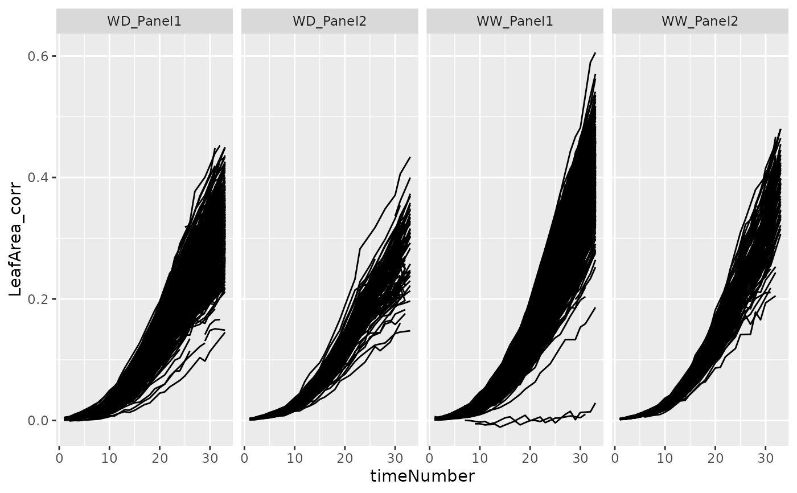

Fit the P-spline Hierarchical Curve Data Model used in the second stage of
the two-stage approach proposed by Pérez-Valencia et al. (2022). This model
assumes a three-level hierarchical structure in the data, with plants nested
in genotypes, genotypes nested in populations. The input for this function
is the spatially corrected data, as obtained from the first stage of the
approach (see fitModels and getCorrected).
The number of segments is chosen by the user, as well as the B-spline degree,
and the penalty order for the three-levels of the hierarchy. The user can
also decide if different variances for random effects at genotype (separately
for each population) and plant (separately for each genotype) levels are
desired. The function outputs are estimated curves (time series of trajectories
and deviations) and their first and second derivatives for the three-levels
of the hierarchy. The outputs can then be used to estimate relevant parameters
from the curves for further analysis (see estimateSplineParameters).
Usage
fitSplineHDM(
inDat,
genotypes = NULL,
plotIds = NULL,
trait,
useTimeNumber = FALSE,
timeNumber = NULL,
pop = "pop",
genotype = "genotype",
plotId = "plotId",
weights = NULL,
difVar = list(geno = FALSE, plot = FALSE),
smoothPop = list(nseg = 10, bdeg = 3, pord = 2),
smoothGeno = list(nseg = 10, bdeg = 3, pord = 2),
smoothPlot = list(nseg = 10, bdeg = 3, pord = 2),
offset = NULL,
family = gaussian(),
maxit = 200,
trace = TRUE,
thr = 0.001,
minNoTP = NULL
)Arguments
- inDat
A data.frame with corrected spatial data.
- genotypes
A character vector indicating the genotypes for which hierarchical models should be fitted. If
NULL, splines will be fitted for all genotypes.- plotIds
A character vector indicating the plotIds for which hierarchical models should be fitted. If
NULL, splines will be fitted for all plotIds.- trait
A character string indicating the trait for which the spline should be fitted.
- useTimeNumber
Should the timeNumber be used instead of the timePoint?. If
useTimeNumber = FALSE, inDat should contain a column called timePoint of classPOSIXct.- timeNumber
If
useTimeNumber = TRUE, a character vector indicating the column containing the numerical time to use.- pop
A character string indicating the the populations to which each genotype/variety belongs. This variable must be a factor in the data frame.
- genotype
A character string indicating the populations to which each genotype/variety belongs. This variable must be a factor in the data frame.
- plotId
A character string indicating the genotypes/varieties to which each plant/plot/individual belongs. This variable must be a factor in the data frame.
- weights
A character string indicating the column in the data containing the weights to be used in the fitting process (for error propagation from first stage to second stage). By default, when
weights = NULL, the weights are considered to be one.- difVar
Should different variances for random effects at genotype (separately for each population) and plant level (separately for each genotype) be considered?.
- smoothPop
A list specifying the P-Spline model at the population level (nseg: number of segments; bdeg: degree of the B-spline basis; pord: penalty order).
- smoothGeno
A list specifying the P-Spline model at the genotype level.
- smoothPlot
A list specifying the P-Spline model at the plant level.
- offset
A character string indicating the column in the data with an a priori known component to be included in the linear predictor during fitting. By default, when
offset = NULL, the offset is considered to be zero.- family
An object of class
familyspecifying the distribution and link function. The default isgaussian().- maxit
An optional value that controls the maximum number of iterations of the algorithm. The default is 200.
- trace
An optional value that controls the function trace. The default is
TRUE.- thr
An optional value that controls the convergence threshold of the algorithm. The default is 1.e-03.
- minNoTP
The minimum number of time points for which data should be available for a plant. Defaults to 60% of all time points present in the TP object. No splines are fitted for plants with less than the minimum number of timepoints.
Value
An object of class psHDM, a list with the following outputs:
time, a numeric vector with the timepoints.
popLevs, a data.frame with the names of the populations
genoLevs, a factor with the names of the genotypes.
plotLevs, a factor with the names of the plants
nPlotPop, a numeric vector with the number of plants per
population.
nGenoPop, a numeric vector with the number of genotypes per
population.
nPlotGeno, a numeric vector with the number of plants per
genotype.
MM, a list with the design matrices at plant, genotype and
population levels.
ed, a numeric vector with the estimated effective dimension
(or effective degrees of freedom) for each random component of the
model (intercept, slope and non-linear trend) at each level of the
hierarchy (population, genotype and plant)
tot_ed, a numeric value with the sum of the effective
dimensions for all components of the model.
vc, a numeric vector with the (REML) variance component
estimates for each random component of the model (intercept,
slope and non-linear trend) at each level of the hierarchy
(population, genotype and plant)
phi, a numeric value with the error variance estimate.
coeff, a numeric vector with the estimated fixed and random
effect coefficients.
popLevel, a data.frame with the estimated population trajectories
and first and second order derivatives.
genoLevel, a data.frame with the estimated genotype-specific
deviations and trajectories, and their respective first and second
order derivatives.
plotLevel, a data.frame with the estimated plant-specific
deviations and trajectories, and their respective first and second
order derivatives.
deviance, the (REML) deviance at convergence.
convergence, a logical value indicating whether the algorithm
managed to converge before the given number of iterations.
dim, a numeric vector with the (model) dimension of each
model component (fixed and/or random) at each level of the
hierarchy (population, genotype, and plant).
These values correspond to the number of parameters to be estimated.
family, an object of class family specifying the distribution
and link function.
Vp, the variance-covariance matrix for the coefficients.
smooth, a list with the information about number of segments
(nseg), degree of the B-spline basis (bdeg) and penalty order (pord)
used for the three levels of the hierarchy.
References
Pérez-Valencia, D.M., Rodríguez-Álvarez, M.X., Boer, M.P. et al. A two-stage approach for the spatio-temporal analysis of high-throughput phenotyping data. Sci Rep 12, 3177 (2022). doi:10.1038/s41598-022-06935-9
See also
Other functions for fitting hierarchical curve data models:
plot.psHDM(),
predict.psHDM()
Examples
## The data from the Phenovator platform have been corrected for spatial
## trends and outliers for single observations have been removed.
head(spatCorrectedArch)
#> timeNumber timePoint LeafArea_corr LeafArea wt genotype geno.decomp
#> 1 1 2017-04-13 0.002564006 0.002871676 2262.277 GenoA01 WD_Panel1
#> 2 1 2017-04-13 0.002395392 0.002515396 2262.277 GenoA01 WD_Panel1
#> 3 1 2017-04-13 0.003210178 0.003377735 2262.277 GenoA01 WD_Panel1
#> 4 1 2017-04-13 0.003028267 0.003256119 2262.277 GenoA01 WD_Panel1
#> 5 1 2017-04-13 0.002689516 0.002489031 2262.277 GenoA01 WD_Panel1
#> 6 1 2017-04-13 0.002810055 0.002677329 2262.614 GenoA02 WD_Panel1
#> rowId colId plotId
#> 1 2 16 c16r2
#> 2 3 28 c28r3
#> 3 26 24 c24r26
#> 4 24 20 c20r24
#> 5 56 21 c21r56
#> 6 38 16 c16r38
ggplot2::ggplot(data = spatCorrectedArch,
ggplot2::aes(x= timeNumber, y = LeafArea_corr, group = plotId)) +
ggplot2::geom_line(na.rm = TRUE) +
ggplot2::facet_grid(~geno.decomp)

## We need to specify the genotype-by-treatment interaction.
## Treatment: water regime (WW, WD).
spatCorrectedArch[["treat"]] <- substr(spatCorrectedArch[["geno.decomp"]],
start = 1, stop = 2)
spatCorrectedArch[["genoTreat"]] <-
interaction(spatCorrectedArch[["genotype"]],
spatCorrectedArch[["treat"]], sep = "_")
## Fit P-Splines Hierarchical Curve Data Model for selection of genotypes.
fit.psHDM <- fitSplineHDM(inDat = spatCorrectedArch,
trait = "LeafArea_corr",
useTimeNumber = TRUE,
timeNumber = "timeNumber",
genotypes = c("GenoA14_WD", "GenoA51_WD",
"GenoB11_WW", "GenoB02_WD",
"GenoB02_WW"),
pop = "geno.decomp",
genotype = "genoTreat",
plotId = "plotId",
weights = "wt",
difVar = list(geno = FALSE, plot = FALSE),
smoothPop = list(nseg = 4, bdeg = 3, pord = 2),
smoothGeno = list(nseg = 4, bdeg = 3, pord = 2),
smoothPlot = list(nseg = 4, bdeg = 3, pord = 2),
trace = FALSE)
## Visualize the data.frames with predicted values at the three levels of
## the hierarchy.
# Population level
head(fit.psHDM$popLevel)
#> timeNumber timePoint pop fPop fPopDeriv1 fPopDeriv2
#> 1 1 2017-04-13 WD_Panel1 0.002463487 0.001279128 -5.201063e-05
#> 2 2 2017-04-14 WD_Panel1 0.003738644 0.001293221 8.019776e-05
#> 3 3 2017-04-15 WD_Panel1 0.005093999 0.001439523 2.124061e-04
#> 4 4 2017-04-16 WD_Panel1 0.006661760 0.001718034 3.446145e-04
#> 5 5 2017-04-17 WD_Panel1 0.008574135 0.002128752 4.768229e-04
#> 6 6 2017-04-18 WD_Panel1 0.010963334 0.002671679 6.090313e-04
# Genotype level
head(fit.psHDM$genoLevel)
#> timeNumber timePoint pop genotype fGeno fGenoDeriv1
#> 1 1 2017-04-13 WD_Panel1 GenoA14_WD 0.002075685 0.001195395
#> 2 2 2017-04-14 WD_Panel1 GenoA14_WD 0.003239685 0.001155231
#> 3 3 2017-04-15 WD_Panel1 GenoA14_WD 0.004431400 0.001250825
#> 4 4 2017-04-16 WD_Panel1 GenoA14_WD 0.005786587 0.001482175
#> 5 5 2017-04-17 WD_Panel1 GenoA14_WD 0.007441002 0.001849282
#> 6 6 2017-04-18 WD_Panel1 GenoA14_WD 0.009530403 0.002352147
#> fGenoDeriv2 fGenoDev fGenoDevDeriv1 fGenoDevDeriv2
#> 1 -1.080422e-04 -0.0003878021 -8.373266e-05 -5.603156e-05
#> 2 2.771481e-05 -0.0004989591 -1.379899e-04 -5.248295e-05
#> 3 1.634718e-04 -0.0006625990 -1.886986e-04 -4.893433e-05
#> 4 2.992288e-04 -0.0008751733 -2.358586e-04 -4.538572e-05
#> 5 4.349858e-04 -0.0011331333 -2.794700e-04 -4.183711e-05
#> 6 5.707428e-04 -0.0014329305 -3.195328e-04 -3.828850e-05
# Plot level
head(fit.psHDM$plotLevel)
#> timeNumber timePoint pop genotype plotId fPlot fPlotDeriv1
#> 1 1 2017-04-13 WD_Panel1 GenoA14_WD c12r19 0.001584312 0.001503451
#> 2 2 2017-04-14 WD_Panel1 GenoA14_WD c12r19 0.003010985 0.001373428
#> 3 3 2017-04-15 WD_Panel1 GenoA14_WD c12r19 0.004378235 0.001384605
#> 4 4 2017-04-16 WD_Panel1 GenoA14_WD c12r19 0.005827262 0.001536982
#> 5 5 2017-04-17 WD_Panel1 GenoA14_WD c12r19 0.007499265 0.001830558
#> 6 6 2017-04-18 WD_Panel1 GenoA14_WD c12r19 0.009535444 0.002265334
#> fPlotDeriv2 fPlotDev fPlotDevDeriv1 fPlotDevDeriv2 obsPlot
#> 1 -0.0002006230 -4.913732e-04 3.080565e-04 -9.258081e-05 NA
#> 2 -0.0000594232 -2.287000e-04 2.181971e-04 -8.713801e-05 0.003152152
#> 3 0.0000817766 -5.316485e-05 1.337804e-04 -8.169521e-05 0.004326641
#> 4 0.0002229764 4.067512e-05 5.480663e-05 -7.625242e-05 NA
#> 5 0.0003641762 5.826267e-05 -1.872439e-05 -7.080962e-05 0.007478926
#> 6 0.0005053760 5.040608e-06 -8.681261e-05 -6.536682e-05 0.009495492